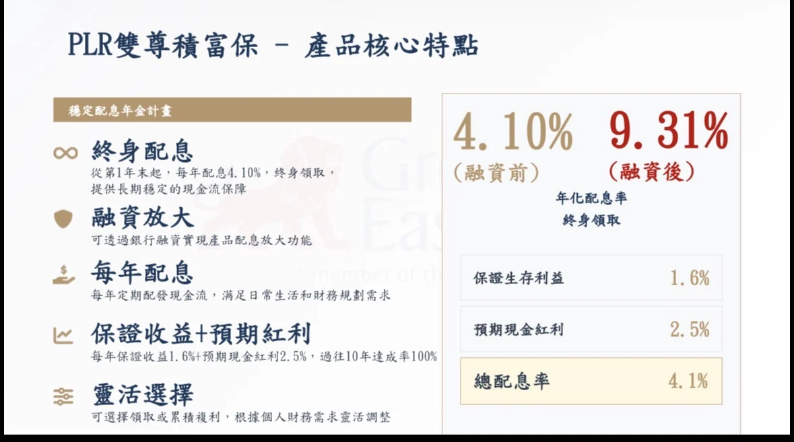
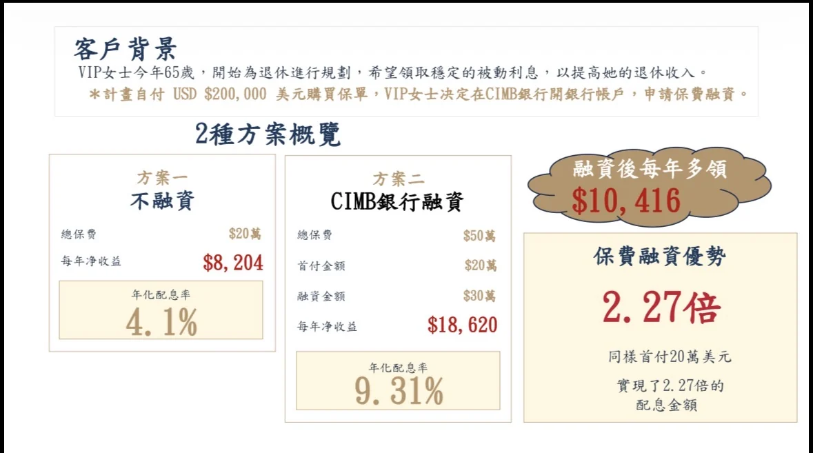
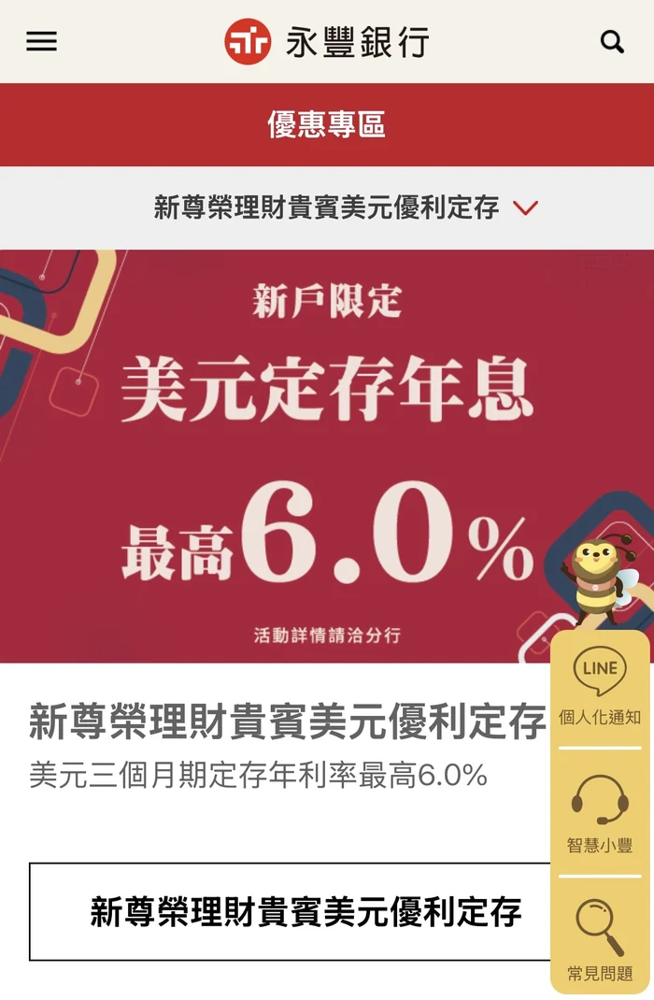
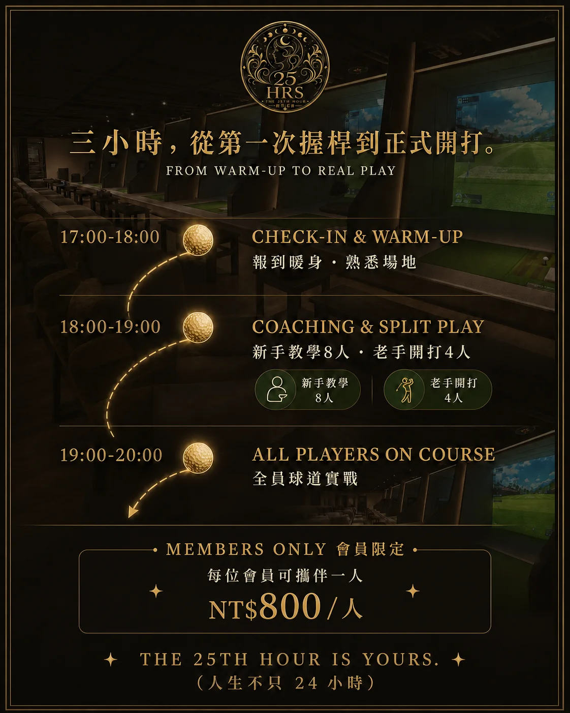
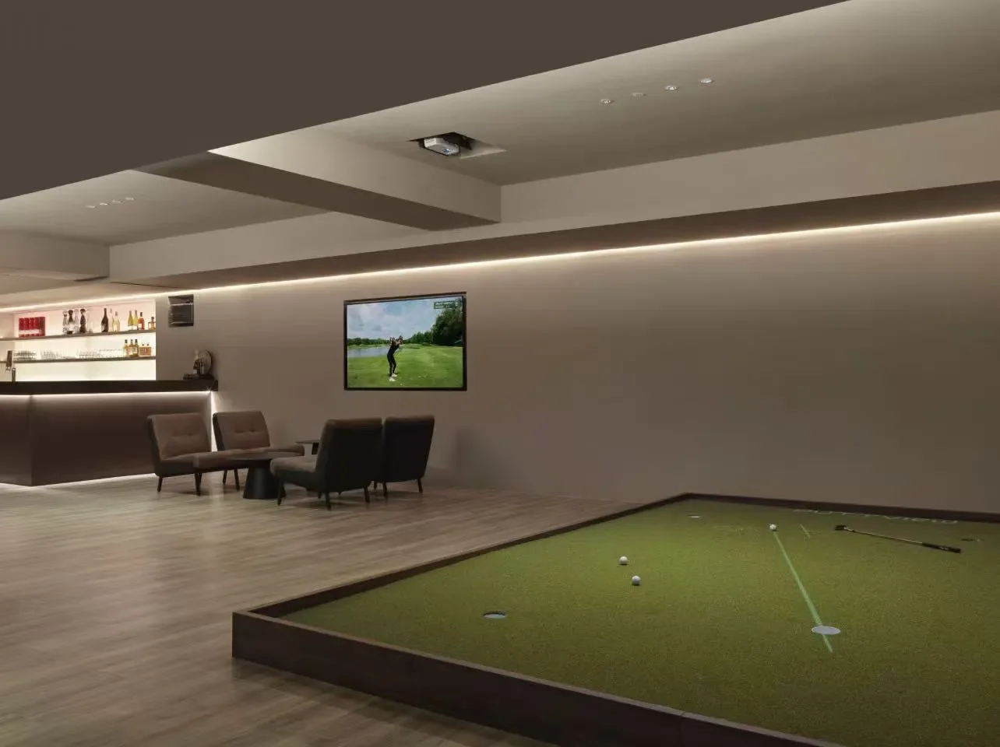

微型創投家的三種素養 拿得到 × 用得對 × 走得遠
您就來對地方了。
今天這場，就是為了回答這些。
不是去投資別人。
是用創投的眼光，經營自己的事業。
創投看一家公司，只看這三件事。
那您自己的公司，過得了關嗎？
這三關，我們一關接一關帶您走。
每一關，都有一個人專門負責把它打通。
這四個看起來是四件事，
其實都缺同一樣東西。
機會，不該只屬於懂門道的少數人。真正讓企業翻身的，往往不是更努力，而是有沒有人願意伸出那隻看得懂門道的手。
資源 · 財商 · 信任 這不是三個模組，是一個轉不停的輪子
研發型、服務創新型、地方型。問題不是有沒有機會，是該投哪一個。
銀行拒絕的不是您，是您當下呈現出來的樣子。
先看清楚您手上有什麼，再談怎麼談。
很多公司不是虧死的，是賺著賺著現金斷了。
不做的事，決定您能長多大。
最危險的不是看起來像詐騙的，是看起來像機會的。
信任是設計出來的制度，不是社交技巧。
名片的數量從來不是變數，過濾網的純度才是。
從被帶，走到帶別人。
他們全都同時做對了那三件事
十家有 7 家，起步資金來自政府補助、政策性貸款或競賽型獎金
十家全部都經歷過一次現金流瀕死
十家全部都用制度，而不是交情，建立信任
先在聊天室打下您心裡的答案。等一下我們會一起看，它對不對。
準行顧問有限公司 負責人
我在 NVIDIA 管供應鏈專利。
今天第一個案例，
就是 NVIDIA。
「我發現很多企業
缺的不是補助，而是看懂補助的能力。」
我開過一間身心靈公司。
那時候我不懂政府資源，
也不知道要去結交創業者的人脈。
數字很好看。
但沒人告訴我，還有另一條路。
但就創業者的角度而言，
我們需要的是一起努力的創業夥伴，
並不是已經完成商業模式、
穩定運轉的企業家。
場域選錯了。這件事，等一下 Kevin 會再提一次。
我跟團隊說：這一次我開的新公司，
我已經懂了政府補助跟政策性貸款。
所以我們創了 25HRS。
點擊畫面播放
上方標籤可切換另一支．按 → 直接翻下一頁
案例來源：經濟部商業司 案例專區 gcis.nat.gov.tw │ ⚠ Meet 分享時務必勾選「分享分頁音訊」
別人的是黑箱。
我們的，是透明的。
隨時可以討論。您只要專心於本業就好。
多數人第一次送件，卡住的不是文筆，是還沒動筆之前就沒做的三件事。
您可以很放心地去做本業該做的事。
政府補助不是伸手要錢。
是讓最挑剔的那個客戶，先替您的商業模式背書。
認真想一下。等一下您會發現，您想的那個理由，可能都不是重點。
這些都做得到，
但都不是開公司真正的價值。
您的公司，是拿來承接別人的資源的容器。
不是拿來承接您自己的積蓄。
愛鑫斯坦科技有限公司
我有兩張專利證書。
一張是智能交易系統，
另一張是把交易變成遊戲。
自己的錢先燒。撐不住了才去找資源，這時候體質最差、最沒得談。
天崩開局
用低利甚至零利率的錢開局，資本結構一開始就是對的。
天堂開局
差別不在能力。在順序。
青創 │ 鳳凰 │ 中小微
資格型 │ 競爭型
藉由官方公正客觀的立場，
來檢視您的商業模式。
對應族群：青年創業者
對應族群：中高齡，或負擔家庭照顧責任的二度就業創業者
對應族群：一般中小微型企業的周轉與設備資金
年齡、額度、利率與年限依主管機關最新公告為準。細節，等一下Ainstein現場講。
所以即使您現在不缺資金，也建議申請。
用低利率甚至零利率的資金，加強營運彈性
透過銀行端公正客觀的立場，幫您檢視與優化商業模式
申請貸款這件事，
本身就是一次免費的商業模式健檢。
如果連政府或銀行都不認為
您的商業模式會賺錢，
那 B2B 與 B2C 就更難成交。
師大數學系
交大資工所
華碩 ROG 電競部門
高級工程師
2017 入市，十年
股票→期貨→選擇權→外匯
兩項新型專利
工程師的靈魂，讓我做任何事
都渴望找出通則，並將它量化、複製。
點擊畫面播放
按 → 直接翻下一頁
新型專利 M598465 智能交易系統 │ M683802 遊戲化智能金融交易系統
ESBI 象限
把賺錢的方式分成四種身分：
E 員工 S 自雇者
B 企業家 I 投資者
我直接從 E 跳到 I，
跳過了 S 和 B。
不管工程師的薪水再高、交易賺了多少錢，
不懂得打造自動運轉的事業體，
我終究只是一個高級打工族。
這一刻，我打通了從軟體研發、企業營運
到資金調度的所有關鍵資源。
我們不打單打獨鬥的消耗戰。
我們準備好帶領大家一起成長、共好。
我們準備好了，您呢？
錢從哪裡來，決定您的公司開局的高度。
這一關過了，才輪到第二關。
這一題，幾乎每一位撐過三年的老闆都遇過。
亞特國際資訊顧問有限公司 執行長
我看過的部位，規模逾千億。
所以我很清楚，
一般人被騙的話術長什麼樣子。
我為什麼開這間公司，
以及我怎麼把公司的專業
賦能到 25HRS。
最危險的，從來不是看起來像詐騙的那一個。
是看起來像機會的那一個。
不是更神秘的商品。是三個更無聊的條件。
由國際正規金融機構發行
金流走銀行體系進出
用得起銀行融資管道
這些不是秘密。
只是一般人，沒有那條門道。

同一張保單。
差別只在有沒有那條銀行渠道。
情境：65 歲女士規劃退休現金流，自付 20 萬美元購買同一張儲蓄型保單
每年多領
$10,416
一般人看到的是商品。
有門道的人看到的是資金結構。

數字都在上面。您只是從來沒被告知有第二種做法。
一般美元定存牌告利率
銀行新戶限定．美元三個月期專案

同一種工具，差了將近一倍。
差別只在，您知不知道有這個專案。
錢進得來只是開始。
駕不駕得住，才決定它會不會憑空不見。
這一題，我們用今天這十位創辦人的做法來回答。
這十個人，幾乎沒有一個
是靠扶輪社、獅子會、青商會，
找到他們的核心夥伴。
不只是他們。
我們需要的是一起努力的創業夥伴，
並不是已經有家業、完成商業模式並且穩定運轉的企業家。
十年前，在台灣，他踩過同一個坑。
優點行銷整合有限公司
我是做行銷的。
所以我最清楚什麼叫
「很熱鬧，但沒有一個人真的認識您」。
一起經歷過生死存亡的人。PayPal 幫、騰訊五虎將都是國高中同學。
Airbnb 不去外面社交，在 YC 內部群組找夥伴。權威機構先幫您篩過。
太陽谷峰會、Mastermind 小組。不談豐功偉業，只談「我現在最慘的危機」。
缺任何一個，
就只是來者不拒的開放式社交。
25HRS CLUB
桌遊、餐酒、潑畫、球類、KTV、財商輕沙龍。低壓力、高頻率，讓關係自然發生。
不必是會員，現在就能加入。
室內高爾夫、品酒、私宴、莊園、遊艇、盛典。邀請制，共同主題，排他。
Salon 12 場 ＋ Club 6 場 ＝ 一年 18 次見面的理由
同一群人，六種不同的相處方式。
先讓關係自然發生，再談合作。
點擊畫面播放
按 → 直接翻下一頁


室內高爾夫為場，好的關係，剛好發生。
從被帶，走到帶別人。
信任不是靠交情累積的。
是靠制度設計出來的。
三題只要有一題卡住，
那一關就是您現在最該打通的。
坊間開案費 8 到 15 萬，結案再抽 15 到 30%
多數人自己摸索。花掉的是時間
市面上一門課就要數萬起跳
從幾萬到十幾萬都有
這些加起來，是一筆不小的數字。
四位講師 × 四種形式 × 25 小時的直接對接
您不是買一套課。
是同時請了四個顧問。
這是照市場行情算出來的數字。
開案費 ＋ 結案抽成。
案子過不過，開案費都收了。
而且寫手委託費，還無法核銷。
我們成為您的數位轉型委外商，
收入來自補助案的委外費。
案子做不成，這筆錢我們也收不到。
所以您的案子做不做得成，
跟我們是同一條船。
這就是為什麼，我們不需要靠學費賺您的錢。
尊榮方案是 9 ＋ 8 ＋ 8 ＝ 25 小時。
我們叫 25HRS，名字就是從這裡來的。
我們不是在清倉。
是商業模式本來就不靠這筆錢。
正式版有的九章，一章都沒少
實戰陪跑與一對一顧問，時數完全一樣
複訓、CLUB 會員、90 天實習陪跑，全部照給
正式對外要 $88,800 的尊榮方案 PREMIUM 25HRS，
創始夥伴，通通都給您。
正式版調價後，您不受影響。
不是助教，是本人。
您問的問題，會變成正式版的內容。
走到 L4 時，您排在前面。
封測期只有一次。
創始夥伴，也只有這一批。
我們做的是提高準備度，不是保證核准。這件事沒有人能保證。
補助有查核與核銷。做不出來，是會被追回的。
這是陪跑半年起跳的事。急的人請不要來。
我們在意的是做得成，
不是收得到。
陪跑量能有限，這一批只帶 10 到 12 位